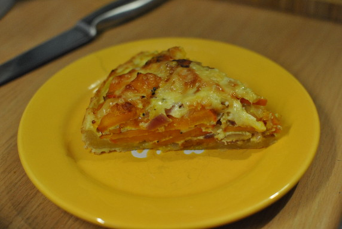

Kürbis-Käse-Tarte

- Zubereitung: ca. 45 Minuten
- Backen: ca. 35 Minuten
- Für 1 Springform mit 28 cm Durchmesser
Zutaten
- 200 g Mehl
- 175 g Doppelrahmfrischkäse
- 110 g weiche Butter
- 4 Eier (Größe M)
- 1/2 Hokkaido-Kürbis (ca. 700 g)
- 3 Zwiebeln
- 4 El Olivenöl
- Salz
- Pfeffer
- 100 g geraspelter mittelalter Gouda
- frisch geriebene Muskatnuss
Zubereitung
- Mehl, 1⁄2 Tl Salz, 100 g Frischkäse, 100 g Butter und 1 Ei
zu einem glatten Teig verkneten. In Klarsichtfolie
gewickelt 1 Stunde kalt stellen.
- Kürbis putzen und in dünne Scheiben schneiden. Zwiebeln schälen und in Streifen schneiden.
- 1 El Öl in einer großen beschichteten Pfanne erhitzen. Zwiebeln darin
glasig braten, herausnehmen. 3 El Öl zugeben, Kürbis darin anbraten.
Unter gelegentlichem Rühren bei mittlerer Hitze 10 Minuten dünsten. Mit Salz und Pfeffer würzen.
- Eine Quiche- oder Springform (28 cm Durchmesser) mit restlicher Butter
gründlich fetten. Teig auf einer bemehlten Arbeitsfläche rund ausrollen
(32 cm Durchmesser), in die Form legen. Überstehenden Rand abschneiden.
- Gemüse auf dem Teig verteilen. 75 g Frischkäse und 3 Eier vermengen.
Mit Salz, Pfeffer und Muskat würzen, über dem Kürbis verteilen.
Mit Käse bestreuen, im heißen Ofen bei 200° Celsius auf dem Rost auf
dem Ofenboden 35-40 Min. goldbraun backen.
Quelle: http://www.essen-und-trinken.de/rezept/330841/kuerbis-kaese-tarte.html